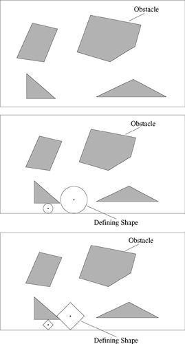

|
| |||||||||||||
|
|
||
Prove that the visibility graph is connected.
Show an example for which the visibility graph does not produce the shortest path in
How can the visibility graph method be augmented so as to yield the shortest path in .
How can the visibility graph in the plane be adapted to handle curved obstacles.
Write a program to compute the visibility graph. The program should take as input from a file a list of polygons, which are in turn represented by a list of vertices. The user can input from the keyboard the start and goal configurations. The program then computes the visibility graph and then determines a path from start to goal.
Let S be the unit circle defined by the preimage of zero under f (x, y) = x2 + y2 − 1. Let g(x, y) = ax2 + 2bxy + cy2 where a, b, c ε . List the points where g is extremized on S. Draw a picture.
Draw the Canny roadmap for the surface configuration space in figure 5.38.
Do connectivity changes in the free space in a slice imply connectivity changes in the original Canny roadmap? In the OPP roadmap?
What are the benefits of using only the local maxima (and not the other extrema) in the OPP method?
The HGVG contains a lot of structure which seemingly can be deleted. Suggest a method to prune this structure.
What are the tradeoffs between using roadmaps and pixel-based maps?
Prove that for any slice direction, OPP is a subset of the GVG.
For the OPP and point-GVG, both in the plane and in , there are useless spokes. If we eliminate them in the planar case, do we still have a topological map? How could we eliminate spokes online?
Use the brushfire implementation to compute the planar point-GVG. Beware of jagged edges.
The planar point-GVG is defined using a Euclidean distance function and consists of straight line and parabolic segments. One way of thinking of the planar point-GVG is the locus of the centers of circles whose perimeters are tangent to obstacles at two or more points. For the environment below, sketch the GVD using the circle analogy.
The definition of the planar point-GVG can be generalized to any convex distance function. Instead of a circle, consider a convex distance function defined by a square (rotated by 45 degrees). For the environment in figure 5.39, sketch the point planar-GVG using both the circle and the square analogy.

Figure 5.39: Photocopy the above figures to draw planar point-GVG's but with different distance metrics.
State at least two advantages and two disadvantages of using potential functions as a sensor-based planner.
Consider the real-valued function
Use the preimage theorem to state the values of c for which f−1(c) is a manifold. For the values of c for which f−1(c) is a manifold, state the dimension of f−1(c). State the values of c for which f−1(c) is connected. Draw pictures of the manifolds for different values of c.
Prove that di is a convex function when is convex.
Prove that the generalized Voronoi region is connected in a connected free space.
Verify that figure 5.6 contains the reduced visibility graph for figure 5.4.
Assume the boundaries of the two-equidistant faces are connected. Prove or disprove that the GVG is connected in .
Implement exploration of an unknown workspace using the incremental construction procedures described in this chapter
Rotate the robot so that the sensor with the smallest sensor reading is pointing "backward." You may use a lookup table here.
Drive the robot away from the closest obstacle until it is two-way equidistant.
Rotate the robot so that it lies in the tangent space of the GVD. You may use a lookup table here.
Drive the robot forward a small distance and test to see if the robot still lies on the GVD (falls into a dead zone that is centered on the GVD).
Rotate the robot by 90 degrees and drive it forward or backward until it is on the GVD and then reorient the robot back into the tangent space.
Trace a GVD-edge until encountering a meet point.
Depart a meet point on a GVD-edge.
Implement the graph data structure for the GVD.
Use a local mapping routine to improve upon the exploration procedure described above.
|
|
||
|